Downstage
RABAT
Program
Rehearsals
STAGE
Story
Visit
Collaborate with us
Membership Club
Downstage
Rabat · The Stage
(04)
THE STAGE
six point eight
metres
.
SECTION A–A′
NOT TO SCALE, BUT HONEST
← Back to Downstage